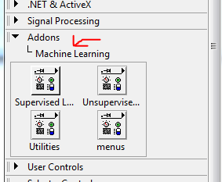

The LabVIEW community has created a toolkit to implement machine learning in LabVIEW. This page will provide a breif description on how to get started using the toolkit and running an example VI.
Download the machine learning toolkit and install the functions from here. When you have finished the installation process you should have a new category of functions.
